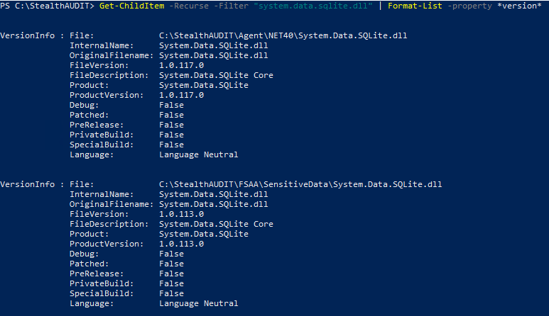

IMPORTANT: This is a work-in-progress article. The product R&D team has yet to review some or all of the information below.
Symptom
When running a File System SEEK scan in Enterprise Auditor, the system generates the following error message:
Error during processing: Could not load file or assembly 'System.Data.SQLite,
Version=1.0.117.0, Culture=neutral, PublicKeyToken=db937bc2d44ff139' or one of its dependencies.
The located assembly's manifest definition does not match the assembly reference.
(Exception from HRESULT: 0x80131040)
Cause
The System.Data.SQLite.dll versions may be outdated or mismatched.
Resolution
To resolve this error, please refer to the following steps:
-
Within the PowerShell prompt, navigate to the
%sainstalldir%folder path by running the PowerShell script below:Get-ChildItem -Recurse -Filter "system.data.sqlite.dll" | Format-List -property *version*
NOTE: The default install path is
\Program Files (x86)\StealthAudit. -
Once the proper .dll file has been identified, replace the outdated or mismatched .dll file with the updated 1.0.117.0 version.